Tencent WorkBuddy Bench is an open, multi-domain suite for coding agents across Code, Web, Office, and Security. Its 260 tasks are reverse-engineered from real commits, pull requests, and business scenarios, then rewritten as colloquial role-play requests to reduce prompt-search contamination. Tasks run under both CodeBuddy Code and Claude Code with domain-specific verifiers. No model leads every board, and Security scores shift by an average absolute 8.6 points across harnesses, showing that the harness is part of the measured system rather than a neutral wrapper.
图 1：Tencent WorkBuddy Bench at a glance. Real commits, pull requests, office workflows, and security cases are reverse-engineered into colloquial, role-played requests, with task distributions matched to real usage (left); the four tracks – Code, Web, Office, and Security – share one open task-directory format (center); every task is scored in an isolated sandbox under two agent harnesses (right). · 论文原始 HTML
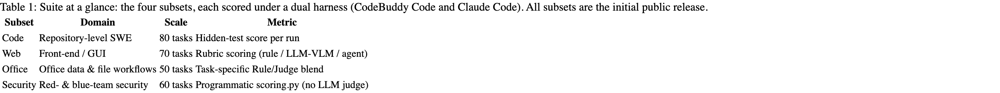
表 1：Suite at a glance: the four subsets, each scored under a dual harness (CodeBuddy Code and Claude Code). All subsets are the initial public release. · 论文原始 HTML
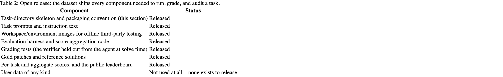
表 2：Open release: the dataset ships every component needed to run, grade, and audit a task. · 论文原始 HTML
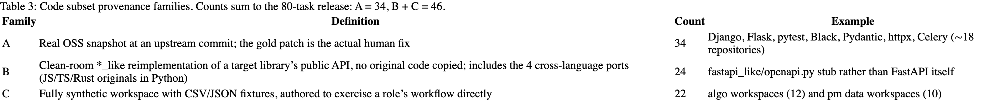
表 3：Code subset provenance families. Counts sum to the 80-task release: A = 34, B + C = 46. · 论文原始 HTML
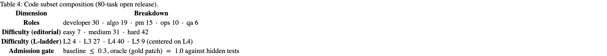
表 4：Code subset composition (80-task open release). · 论文原始 HTML
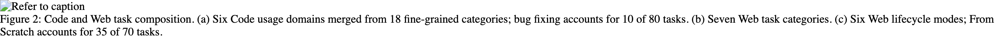
图 2：Code and Web task composition. (a) Six Code usage domains merged from 18 fine-grained categories; bug fixing accounts for 10 of 80 tasks. (b) Seven Web task categories. (c) Six Web lifecycle modes; From Scratch accounts for 35 of 70 tasks. · 论文原始 HTML
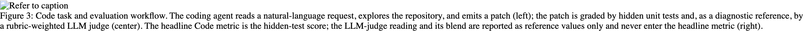
图 3：Code task and evaluation workflow. The coding agent reads a natural-language request, explores the repository, and emits a patch (left); the patch is graded by hidden unit tests and, as a diagnostic reference, by a rubric-weighted LLM judge (center). The headline Code metric is the hidden-test score; the LLM-judge reading and its blend are reported as reference values only and never enter the headline metric (right). · 论文原始 HTML
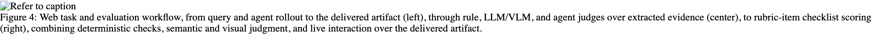
图 4：Web task and evaluation workflow, from query and agent rollout to the delivered artifact (left), through rule, LLM/VLM, and agent judges over extracted evidence (center), to rubric-item checklist scoring (right), combining deterministic checks, semantic and visual judgment, and live interaction over the delivered artifact. · 论文原始 HTML图 5：Composition of the 50-task Office release by construction route and calibrated difficulty. · 论文原始 HTML
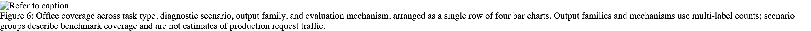
图 6：Office coverage across task type, diagnostic scenario, output family, and evaluation mechanism, arranged as a single row of four bar charts. Output families and mechanisms use multi-label counts; scenario groups describe benchmark coverage and are not estimates of production request traffic. · 论文原始 HTML
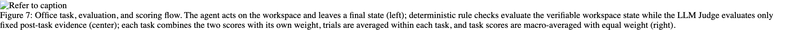
图 7：Office task, evaluation, and scoring flow. The agent acts on the workspace and leaves a final state (left); deterministic rule checks evaluate the verifiable workspace state while the LLM Judge evaluates only fixed post-task evidence (center); each task combines the two scores with its own weight, trials are averaged within each task, and task scores are macro-averaged with equal weight (right). · 论文原始 HTML
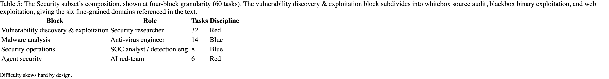
表 5：The Security subset’s composition, shown at four-block granularity (60 tasks). The vulnerability discovery & exploitation block subdivides into whitebox source audit, blackbox binary exploitation, and web exploitation, giving the six fine-grained domains referenced in the text. · 论文原始 HTML图 8：WorkBuddy Bench Security overview. Tasks are built from real, historical vulnerabilities and authored scenarios into reproducible, self-contained cases (left); they span six red- and blue-team task types – whitebox source audit, blackbox binary exploitation, web exploitation, agent security, malware analysis, and security operations – across 38 red-team and 22 blue-team tasks (center); and each is scored by a per-task deterministic program inside an isolated Docker container that emits a numeric reward (right). · 论文原始 HTML
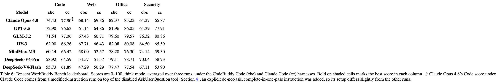
表 6：Tencent WorkBuddy Bench leaderboard. Scores are 0–100, think mode, averaged over three runs, under the CodeBuddy Code (cbc) and Claude Code (cc) harnesses. Bold on shaded cells marks the best score in each column. ‡\ddaggerClaude Opus 4.8’s Code score under Claude Code comes from a modified-instruction run: on top of the disabled AskUserQuestion tool (Section 4), an explicit do-not-ask, complete-in-one-pass instruction was added, so its setup differs slightly from the other runs. · 论文原始 HTML图 9：Office results by difficulty and task type. (a) Mean Office score by calibrated difficulty within each harness, averaged over all models with scored runs in that panel. (b) Equal-weight task average for the seven diagnostic task types represented by at least four tasks, shown for the three models discussed in the text. Scores use a 0–100 scale. Bold marks the best score in the full model set for each task type and harness, so a displayed three-model group may contain no bold value. HY-3’s per-task slices in this figure predate its updated Office run, so its contribution to the panel means reflects the earlier scoring. · 论文原始 HTML
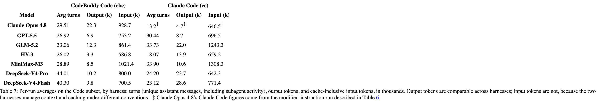
表 7：Per-run averages on the Code subset, by harness: turns (unique assistant messages, including subagent activity), output tokens, and cache-inclusive input tokens, in thousands. Output tokens are comparable across harnesses; input tokens are not, because the two harnesses manage context and caching under different conventions. ‡\ddaggerClaude Opus 4.8’s Claude Code figures come from the modified-instruction run described in Table 6. · 论文原始 HTML
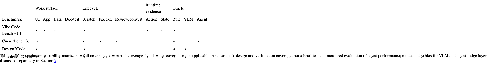
表 8：Web benchmark capability matrix. ∙\bullet = full coverage, ∘\circ = partial coverage, blank = not covered or not applicable. Axes are task-design and verification coverage, not a head-to-head measured evaluation of agent performance; model-judge bias for VLM and agent-judge layers is discussed separately in Section 7. · 论文原始 HTML
图表来自 arXiv HTML 页面渲染截图，保持论文顺序；未人工重排数值。若截图与正文存在歧义，以 原论文 为准。
A cross-platform desktop All-in-One assistant for Claude Code, Codex, OpenCode, OpenClaw, Grok Build & Hermes Agent. Only official website: ccswitch.io
High-performance code intelligence MCP server. Indexes codebases into a persistent knowledge graph — average repo in milliseconds. 158 languages, sub-ms queries, 99% fewer tokens. Single static binary, zero dependencies.
![figure 8: WorkBuddy Bench Security overview. Tasks are built from real, historical vulnerabilities and authored scenarios into reproducible, self-contained cases (left); they span six red- and blue-team task types – whitebox source audit, blackbox binary exploitation, web exploitation, agent security, malware analysis, and security operations – across 38 red-team and 22 blue-team tasks (center); and each is scored by a per-task deterministic program inside an isolated Docker container that emits a numeric reward (right).](morning-brief-2026-07-27-assets/workbuddy-figure-8.png)
![figure 9: Office results by difficulty and task type. (a) Mean Office score by calibrated difficulty within each harness, averaged over all models with scored runs in that panel. (b) Equal-weight task average for the seven diagnostic task types represented by at least four tasks, shown for the three models discussed in the text. Scores use a 0–100 scale. Bold marks the best score in the full model set for each task type and harness, so a displayed three-model group may contain no bold value. HY-3’s per-task slices in this figure predate its updated Office run, so its contribution to the panel means reflects the earlier scoring.](morning-brief-2026-07-27-assets/workbuddy-figure-9.png)